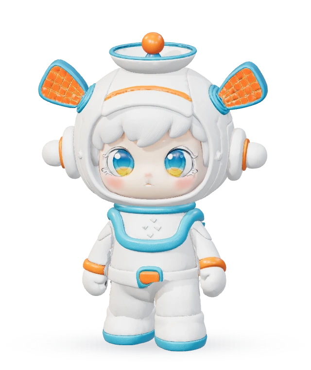
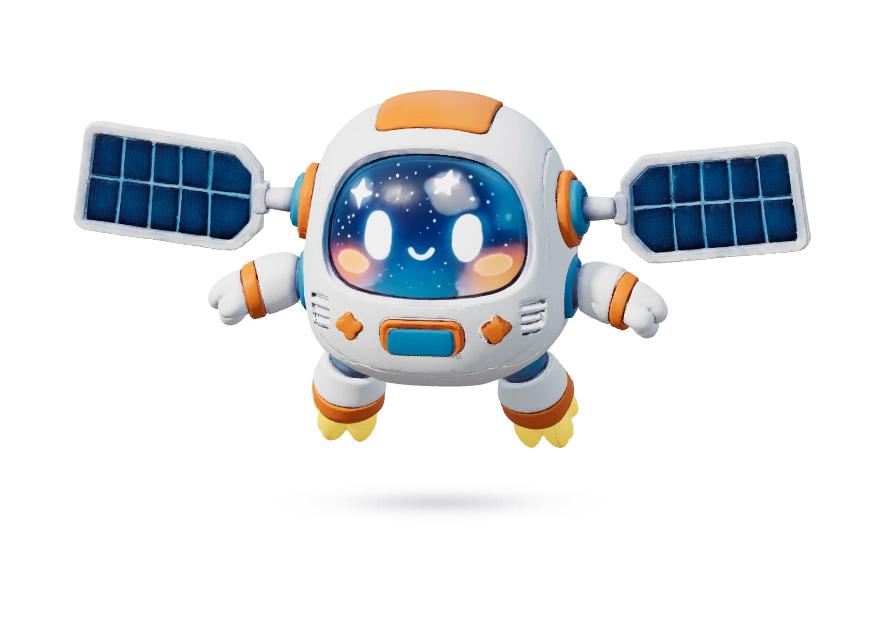

北京卫星小镇
北京卫星小镇 STAR QUEST / SEVEN PLACES, ONE ADVENTURE
跟随好奇
点亮七颗星
和星仔出发，让讯宝领航
走进建筑、完成挑战，把小镇的故事连成一片星光

星仔 · 行动担当
讯宝 · 探索导航YOUR JOURNEY
七个区域 七种发现
0 / 7区域之星
先了解区域，再开启本区挑战。完成当前任务后，下一站会为你解锁。
旋转建筑发现细节 · 放大浏览，让好奇先行一步
THE TOWN LIGHTS UP
集齐七星 迎接小镇庆典
把试飞场的星光装置与社区装饰带到派对
七个区域依次点亮，留下与星仔、讯宝的纪念合影